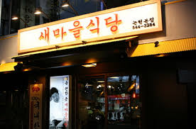

가락시장에 새마을식당 정말 추천합니다.
안녕하세요. 제가 이번에 갔다온 가락시장 맛집 새마을식당 신사역점에 대한 리뷰를 하겠습니다.
우선, 식당에 들어서자마자 알바생들이 정말 친절했고, 음식은 맛있었습니다.
아름다운 고기의 맛
 앞으로 식당은 여기로 오겠습니다. 정말 만족합니다.앞으로 식당은 여기로 오겠습니다. 정말 만족합니다.앞으로 식당은 여기로 오겠습니다. 정말 만족합니다.앞으로 식당은 여기로 오겠습니다. 정말 만족합니다.앞으로 식당은 여기로 오겠습니다. 정말 만족합니다.앞으로 식당은 여기로 오겠습니다. 정말 만족합니다.앞으로 식당은 여기로 오겠습니다. 정말 만족합니다.앞으로 식당은 여기로 오겠습니다. 정말 만족합니다.앞으로 식당은 여기로 오겠습니다. 정말 만족합니다.앞으로 식당은 여기로 오겠습니다. 정말 만족합니다.앞으로 식당은 여기로 오겠습니다. 정말 만족합니다.앞으로 식당은 여기로 오겠습니다. 정말 만족합니다.앞으로 식당은 여기로 오겠습니다. 정말 만족합니다.앞으로 식당은 여기로 오겠습니다. 정말 만족합니다.앞으로 식당은 여기로 오겠습니다. 정말 만족합니다.앞으로 식당은 여기로 오겠습니다. 정말 만족합니다.앞으로 식당은 여기로 오겠습니다. 정말 만족합니다.앞으로 식당은 여기로 오겠습니다. 정말 만족합니다.앞으로 식당은 여기로 오겠습니다. 정말 만족합니다.앞으로 식당은 여기로 오겠습니다. 정말 만족합니다.앞으로 식당은 여기로 오겠습니다. 정말 만족합니다.앞으로 식당은 여기로 오겠습니다. 정말 만족합니다.앞으로 식당은 여기로 오겠습니다. 정말 만족합니다.앞으로 식당은 여기로 오겠습니다. 정말 만족합니다.앞으로 식당은 여기로 오겠습니다. 정말 만족합니다.앞으로 식당은 여기로 오겠습니다. 정말 만족합니다.앞으로 식당은 여기로 오겠습니다. 정말 만족합니다.앞으로 식당은 여기로 오겠습니다. 정말 만족합니다.자주 가겠습니다.